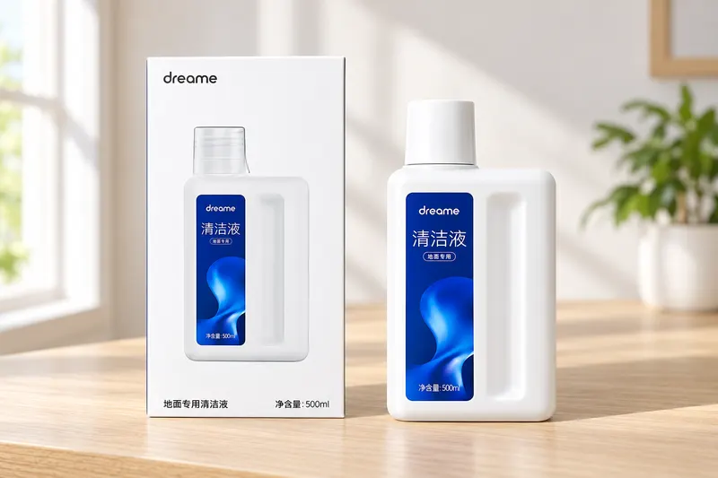

드리미
직배수 하부장 습기 막는 드리미 X50s Pro Master 원추형 듀오브러시·필터 1년 세트
직배수 하부장 습기 막는 드리미 X50s Pro Master 원추형 듀오브러시·필터 1년 세트 핵심 규격·교체 기준 요약. 싱크대 하부장이나 다용도실 가구장 안에 직배수 스테이션을 매립해 사용하는 드리미 X50s Pro Master(X50 Master)는 가구장 내부...

직배수 하부장 습기 막는 드리미 X50s Pro Master 원추형 듀오브러시·필터 1년 세트 핵심 규격·교체 기준 요약. 싱크대 하부장이나 다용도실 가구장 안에 직배수 스테이션을 매립해 사용하는 드리미 X50s Pro Master(X50 Master)는 가구장 내부...

후속 모델과 더스트백·필터 규격이 다른 드리미 L20 울트라·X30 울트라 전용 1년 세트 핵심 규격·교체 기준 요약. 드리미 올인원 로봇청소기는 L20 Ultra·X30 Ultra 세대와 후속 X40·X50 세대의 먼지통 필터 길이 및 더스트백 카드 홀더 모양이 달...

드리미 X40 울트라·L40 울트라 스파이럴 고무 브러시·다크그레이 필터 1년 세트 점검 핵심 규격·교체 기준 요약. 벽면 걸레받이와 식탁 다리 주변을 닦을 때 우측 물걸레 패드와 사이드브러시가 바깥으로 확장되는 드리미 X40 Ultra(및 L40 Ultra)는 모서...
드리미 L20 울트라·X30 울트라 vs X40·X50 필터·더스트백 규격 비교와 1년 세트 핵심 규격·교체 기준 요약. 드리미 올인원 로봇청소기는 L20 Ultra·X30 Ultra 세대와 후속 X40·X50 세대의 먼지통 필터 길이 및 더스트백 카드 홀더 모양이...
걸레받이·모서리 스윙 청소하는 드리미 X40 울트라·L40 울트라 패드·브러시 관리 핵심 규격·교체 기준 요약. 벽면 걸레받이와 식탁 다리 주변을 닦을 때 우측 물걸레 패드와 사이드브러시가 바깥으로 확장되는 드리미 X40 Ultra(및 L40 Ultra)는 모서리 마...

온수 물걸레 세척 기종을 위한 드리미 전용 세정제 1L 노즐·잔량 관리법 핵심 규격·교체 기준 요약. 60~80도 온수로 물걸레 패드를 세척하는 드리미 올인원 로봇청소기는 고온 환경에서도 거품이 과하게 일지 않고 배관에 잔여물이 남지 않는 전용 포뮬러 세정제를 사용하...
주방 하부장 빌트인 직배수 드리미 X50s Pro Master 습기·소모품 관리법 핵심 규격·교체 기준 요약. 싱크대 하부장이나 다용도실 가구장 안에 직배수 스테이션을 매립해 사용하는 드리미 X50s Pro Master(X50 Master)는 가구장 내부 공기 순환이...

드리미 X50 Master 듀오브러시·더스트백 점검과 1년 세트 수납법 핵심 규격·교체 기준 요약. 슬림한 직배수 스테이션으로 주방이나 다용도실 가구장에 깔끔하게 들어가는 드리미 X50 Master는 2개의 원추형 듀오브러시와 원형 물걸레 패드를 주기에 맞춰 살펴보면...
드리미 X50s Pro 직배수 Master 1년 세트 구성과 듀오브러시·물걸레 관리 핵심 규격·교체 기준 요약. 직배수 키트나 대용량 스테이션으로 물걸레 세척을 자주 돌리는 드리미 X50s Pro·Master 라인업은 브러시와 걸레 패드 마모 주기를 미리 챙겨 두면...
드리미 L20 울트라 1년 세트 구성과 더스트백·카트리지 세제 점검법 핵심 규격·교체 기준 요약. 드리미 L20 울트라와 X30 울트라는 세로로 긴 블랙 프레임 필터와 크라프트지 칼라 더스트백, 납작한 직사각형 카트리지 타입 클리너를 사용해 X40·X50 시리즈와 소...
[2026-11-13 점검 #115] 드리미 X50 Master 1년 세트 구성품과 듀오브러시·물걸레 관리 체크 (1년 세트·6개월 세트 옵션) — 드리미X50Master, 드리미X50Ultra, 드리미소모품1년세트 핵심 규격 요약
드리미 X40 울트라 1년 세트 구성과 실리콘 브러시·물걸레 관리법 핵심 규격·교체 기준 요약. 드리미 X40 울트라와 L40 울트라는 일체형 그레이 스파이럴 고무 메인브러시와 원형 회전 물걸레, 다크그레이 프레임 필터, 블랙 플라스틱 칼라 더스트백을 사용합니다.
드리미 X50 Master 1년 세트 구성품과 듀오브러시·물걸레 관리 체크 핵심 규격·교체 기준 요약. 드리미 X50 Master와 X50 Ultra는 옐로우·블랙 한 쌍으로 이루어진 원추형 듀오브러시와 다크그레이 주름 필터를 사용합니다.
드리미 로봇청소기 세제 500ml 개봉 후 보관법과 1병·2병 선택 가이드 핵심 규격·교체 기준 요약. 드리미 로봇청소기 도크에서 물걸레 온수·자동 세척을 자주 돌리는 가정이라면 한 병이 생각보다
드리미 로봇청소기 세제 500ml 보충 전, 세척판 점검과 1병·2병 선택 기준 핵심 규격·교체 기준 요약. 드리미 X40·X50·X60 계열 로봇청소기로 물걸레 세척을 반복하다
드리미 X40·X50·X60 전용 세제, 1병·2병 선택과 리필 전 확인 순서 핵심 규격·교체 기준 요약. 드리미 로봇청소기로 물걸레 청소를 이어가다

드리미 세제 500ml 개봉 뒤, 사용기한·보관 안내를 기록하는 법 핵심 규격·교체 기준 요약. 판매자 안내｜제이상점이 제조사 공식 자료와 현재 자사 상품·옵션을 조사해 직접 작성했습니다.

드리미 세제 500ml·1병·2병, 옵션과 주문 수량 읽는 법 핵심 규격·교체 기준 요약. 판매자 안내｜제이상점이 제조사 공식 자료와 현재 자사 상품·옵션을 조사해 직접 작성했습니다.

드리미 X50 Ultra 세제통 잔량이 줄지 않을 때 확인할 것 핵심 규격·교체 기준 요약. 판매자 안내｜제이상점이 공식 자료와 현재 판매 옵션을 조사해 직접 작성했습니다.

드리미 로봇청소기 세제, 구매 전 모델명·병 라벨 확인법 핵심 규격·교체 기준 요약. 판매자 안내｜제이상점이 공식 자료와 현재 판매 구성을 확인해 작성했습니다.